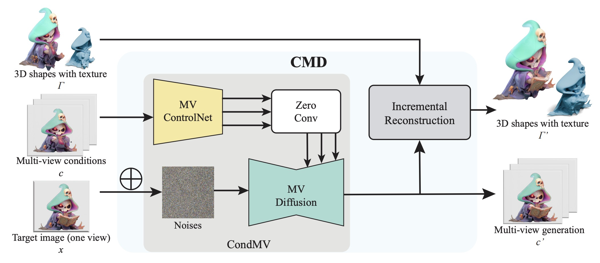
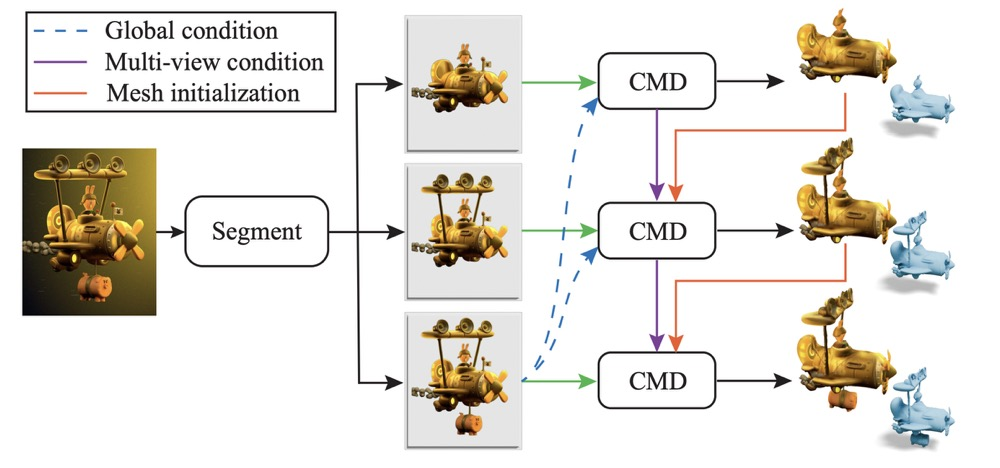
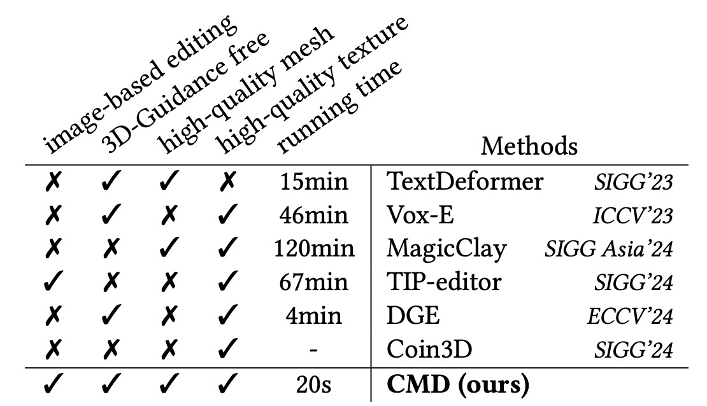
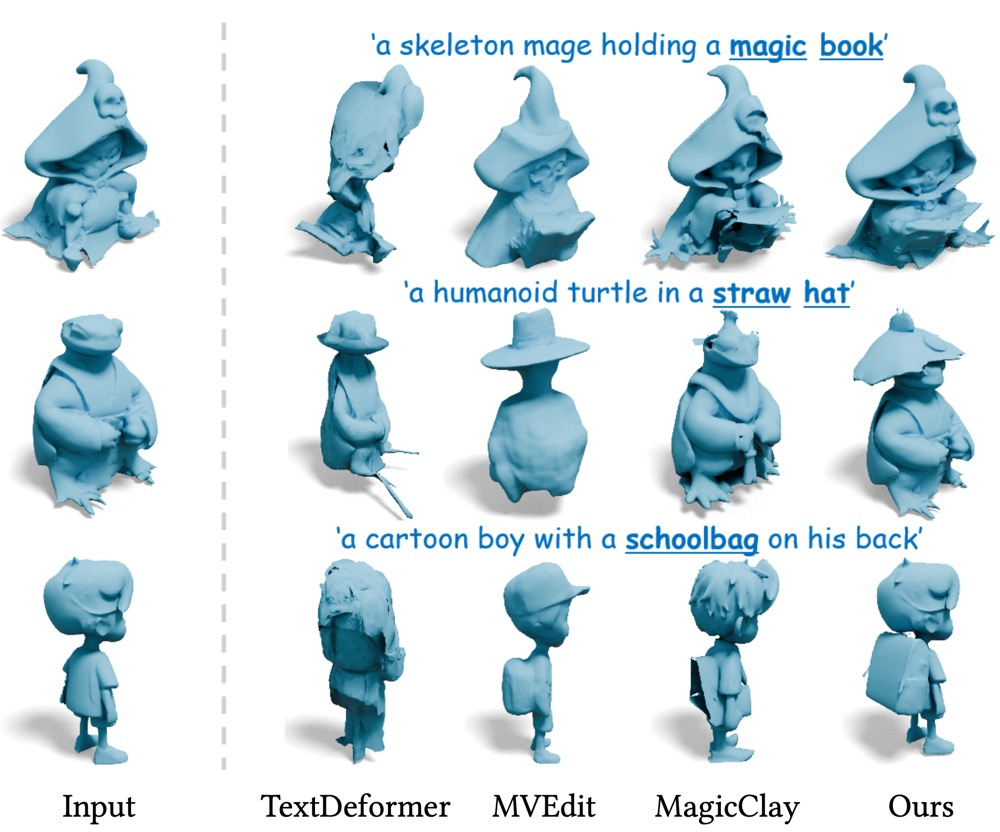
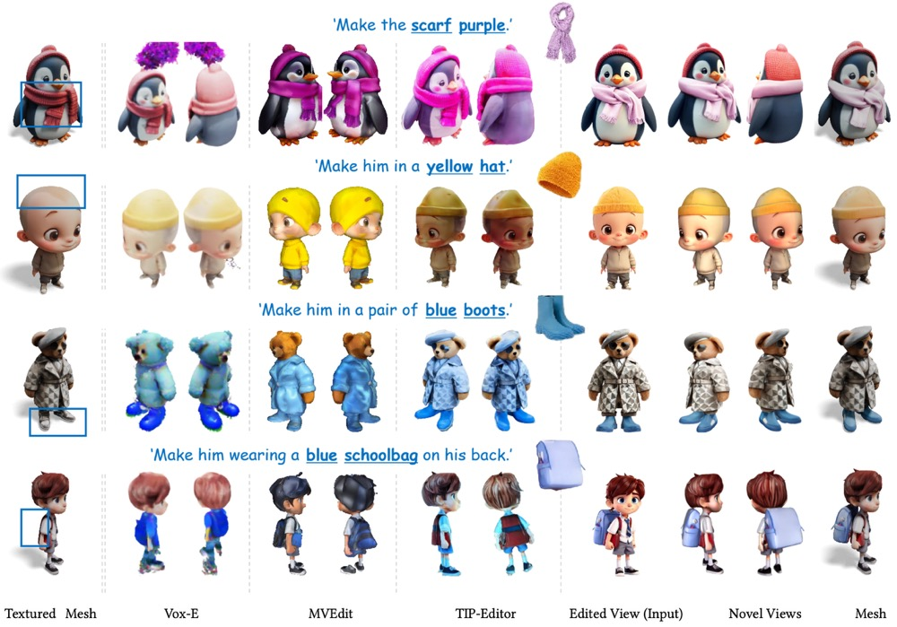
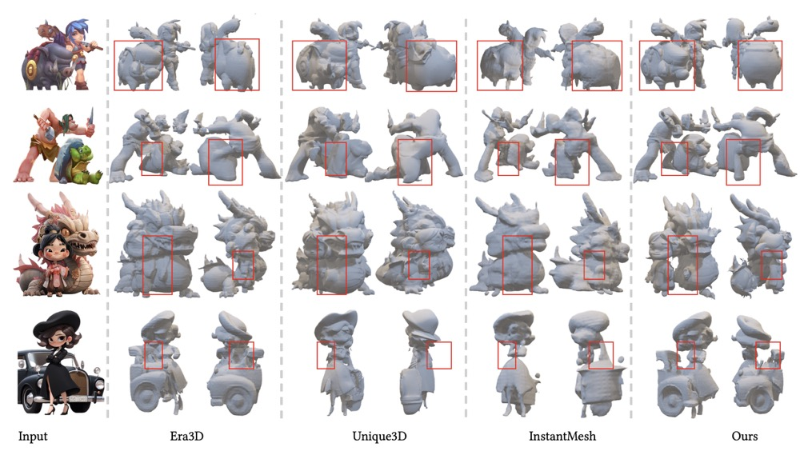

We present a novel conditional multiview diffusion model (CMD) for easy-to-use local 3D editing of a 3D model by editing a rendered view within 20 seconds and the single-view progressively generating a complex 3D model part by part with more fine details and structures.
Abstract
Recently, 3D generation methods have shown their powerful ability to automate 3D model creation. However, most 3D generation methods only rely on an input image or a text prompt to generate a 3D model, which lacks the control of each component of the generated 3D model. Any modifications of the input image lead to an entire regeneration of the 3D models. In this paper, we introduce a new method called CMD that generates a 3D model from an input image while enabling flexible local editing of each component of the 3D model. In CMD, we formulate the 3D generation as a conditional multiview diffusion model, which takes the existing or known parts as conditions and generates the edited or added components. This conditional multiview diffusion model not only allows the generation of 3D models part by part but also enables local editing of 3D models according to the local revision of the input image without changing other 3D parts. Extensive experiments are conducted to demonstrate that CMD decomposes a complex 3D generation task into multiple components, improving the generation quality. Meanwhile, CMD enables efficient and flexible local editing of a 3D model by just editing one rendered image.

Editing pipeline. Our method takes a 3D mesh and an edited rendering (target image) of this mesh as input and produces the edited 3D meshes while keeping other regions unchanged. CMD essentially consists of a CondMV that takes both target image and multiview conditions (RGB images and normal maps rendered from the given 3D mesh) as inputs and generates the multiview generations (RGB images and normal maps) that correspond to the target image. Then, CMD incrementally reconstructs the output meshes from the multiview generations.

Progressive generation pipeline. Based on CMD, we decompose the input complex 3D shapes into several parts by image segmentation algorithm and then generate the shape in a part-by-part manner.
Comparison

Overview of the properties of 3D editing methods. We consider the features of (a) image-based editing, (b) 3D-Guidance free, (c) high-quality mesh, (d) high-quality texture, and (e) running time. Without any explicit 3D guidance, our method supports image-based 3D editing and outputs high-quality edited textured mesh, which strictly follows the given image reference. The whole process takes less than 20 seconds and exhibits significant efficiency against existing 3D editing approaches.

Qualitative comparisons of 3D geometry editing.

Qualitative comparisons of 3D appearance editing.

Comparisons with generation baselines.